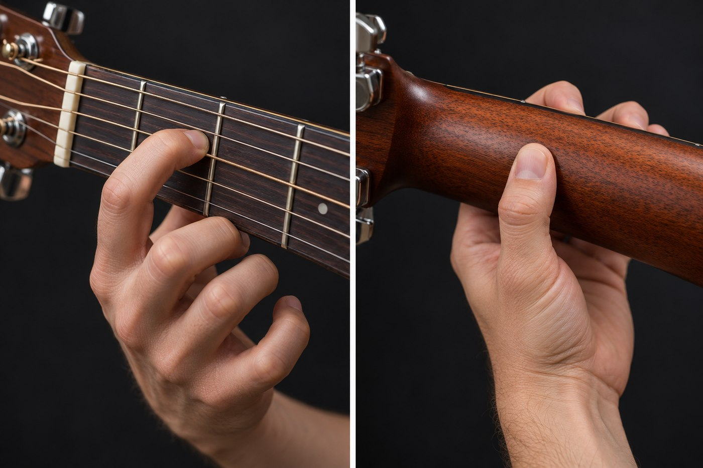

拍點、讀譜與熱手
Beat · Reading · Warm-up
主講：畫素音樂工作坊 李奕勳
musicallanding@gmail.com
今天的路線：閱讀樂譜，喚醒手指
- 能清楚辨識五線譜上的 Do 到 Do，理解音名、唱名、簡譜的對應
- 理解全音符到十六分音符的時值，能夠分辨 2/4、3/4、4/4、6/8 不同拍型
- 閱讀六線譜 TAB，跟著節拍器完成爬格子熱手
- 下課前，以 C 大調音階彈奏《歡樂頌》；掃描這張的 Qr Code，在手機上跟著練習
先調音，再分享這一週的練習
- 全班一起調音：從 6 弦 E 開始，逐條調準
- 老師回答上週出場券裡，最多人詢問的三個問題
- 兩位同學分享：自己吉他的筒身與面板種類
手指疼痛嗎？前兩週指尖疼痛很正常，每天短時間、多次練習，比一次練很久，更快練出指繭。
這週自己調音，大約花了多少時間？
拍點：跟著節拍器拍手
① 拍手數拍
每一拍拍手一次，嘴巴數「1、2、3、4」，第 1 拍拍得大聲一點。
② 加入半拍
拍手落在拍點，嘴巴在中間補上一個「&」：1 & 2 & 3 & 4 &。
③ 只拍反拍
腳踩拍點，雙手只在「&」拍下去。這是流行歌曲最常見的律動。
BPM 代表每分鐘的拍數。60 BPM 剛好一秒一拍，如同時鐘的秒針。
吉他譜上常見的「4/4」，代表什麼意思？
先選一個答案，學完今天的內容再回頭檢查。
- 這首歌要彈四分鐘
- 四個和弦輪流彈奏四次
- 每小節 4 拍，四分音符算一拍
- 速度是 44 BPM
學習讀譜的理由
和弦譜、六線譜、簡譜、五線譜，是音樂人的共同語言。具備讀譜能力，就能自行學習新歌。
五線譜：位置越高，音越高
高音譜號 𝄞
又稱 G 譜號，捲起來的中心落在第二線，那條線就是 G（Sol）。
加線
超出五條線的音，就在上方或下方加上短線，例如中央 C 就在下加一線。
吉他記譜的習慣
吉他譜習慣記高八度：譜上的中央 C，實際彈奏的聲音低一個八度。
同一個音，三種名稱；八個音，兩個半音
| 級數 | Ⅰ 主音 | Ⅱ 上主音 | Ⅲ 中音 | Ⅳ 下屬音 | Ⅴ 屬音 | Ⅵ 下中音 | Ⅶ 導音 | Ⅷ 主音 |
|---|---|---|---|---|---|---|---|---|
| 音名 | C | D | E | F | G | A | B | C |
| 唱名 | Do | Re | Mi | Fa | Sol | La | Si | Do |
| 簡譜 | 1 | 2 | 3 | 4 | 5 | 6 | 7 | 1̇ |
| 距離 | 全 全 半 全 全 全 半 | |||||||
吉他上每移動一格就是一個半音，兩格是一個全音。因此 Mi→Fa、Si→Do 只相差一格，其他相鄰的音都相差兩格。
將一小節切成一半，再切一半
西洋音樂以「二分法」最常見：每往下一層，音符長度就變為一半，數量變為兩倍。八分音符以下，以橫線（符桁）將同一拍的音符連起來。
休止的拍子，同樣要數準
附點：再加上一半
音符右邊的小點，表示長度再加上原本的一半：附點四分音符 = 1 + ½ = 1.5 拍；附點二分音符 = 3 拍。
休止符的意義
休止的那一拍，手要停住、聲音要切掉，心裡仍然持續數拍。許多歌曲會在關鍵處突然停頓，聽起來格外帥氣。
聆聽一次、唸誦一次：用「Ta」唱出節奏
- 選擇一種節奏，先按下「示範播放」聆聽
- 按下「開始挑戰」，跟著預備拍用 Ta 唱出來
- 麥克風會比對你的拍點，提示搶拍或拖拍
- 不方便出聲，可以改用「拍點」鍵或 J 鍵
- 先將節奏唸準確，之後換成右手刷弦就簡單許多
拍號決定強弱：一小節有幾拍、哪一種音符算一拍
強、弱。進行曲、輕快的歌曲。
強、弱、弱。華爾滋、生日快樂歌。
強、弱、次強、弱。大部分的流行歌曲。
八分音符為一拍，每小節 6 拍，帶有搖晃的感覺。
上方的數字代表每小節幾拍；下方的數字代表以幾分音符為一拍。3/4 代表「每小節 3 拍，以四分音符為一拍」。
一起唱〈生日快樂歌〉，邊唱邊拍手
「祝你生日快樂」最自然的拍子是哪一種？
- 2/4：強、弱
- 3/4：強、弱、弱
- 4/4：強、弱、次強、弱
一小節 4/4，下列哪一種組合剛好填滿？
- 3 個四分音符
- 1 個二分音符＋1 個四分音符
- 6 個八分音符
- 1 個二分音符＋2 個四分音符
六條線代表六條琴弦，數字代表格數
- 最上方的一條線是最細的 1 弦，最下方是 6 弦
- 數字代表要按壓的格數，0 代表空弦
- 上下疊在一起的數字，要同時彈奏（也就是和弦）
- 六線譜標示位置、五線譜標示節奏，兩者常常一起出現
休息十分鐘，甩甩雙手、按摩指尖
按弦乾淨的四個要點

手指彎曲，留出鄰弦空間拇指在背面支撐
以指腹輕貼琴頸中線
- ① 靠近琴衍：按在格子靠右的位置，最省力，也最不容易產生雜音
- ② 指尖立起來：使用指尖與指腹之間，手指和指板接近 90 度，才能避開隔壁的琴弦
- ③ 拇指在背後：放在琴頸背面中線，和手指像夾子一樣同時出力，保持在琴頸背面支撐
- ④ 力道適中：按到聲音清楚就停止，太用力容易疲勞，也會讓音高偏高
爬格子 1-2-3-4：一根手指負責一格
食指負責第 5 格、中指第 6 格、無名指第 7 格、小指第 8 格。右手用彈片「下、上」交替撥弦。按下一格時，前面的手指留在琴弦上。
爬格子 1-3-2-4：讓手指各自獨立
練習目標
左手的控制力與擴張，右手的速度與準確度。
加速的方法
連續兩輪都穩定，才增加 4 BPM。原講義的 BPM 100 是最後的目標，先從慢速開始。
移往低把位
熟練之後，從第 1 格開始爬格子，格距最寬，手指擴張最有效。
爬格子接力賽
- 每組排成一列，每人負責一條琴弦，下一位接著彈奏下一條
- 節拍器 70 BPM，全組六條琴弦都保持穩定，得 2 分
- 中途停下或彈錯，從那一位重新接上，得 1 分
- 第二輪提升到 80 BPM，挑戰全組最高速度
五格調音法：用隔壁的琴弦當作參考
3 弦對照第 4 格的原因：3 弦到 2 弦相差大三度，其他相鄰琴弦都相差完全四度。第一章的調音圖，在這裡派上用場。
迷思還是事實？
第一把位的 C 大調：找到 Do Re Mi 的位置
綠色代表 C（Do）
5 弦第 3 格、2 弦第 1 格。點選聆聽，這兩個 Do 相差一個八度。
一根手指負責一格
第 1 格用食指、第 2 格用中指、第 3 格用無名指，和爬格子相同。
空弦也是音
4 弦空弦是 D、3 弦空弦是 G、2 弦空弦是 B。
C 大調音階：先往上，再往下
邊彈邊唱出唱名。彈到 2 弦第 1 格的高音 Do，停留兩拍，再一路彈回起點。
《歡樂頌》：只用 1、2 弦就能彈奏
第 4、8 小節有附點四分音符：1.5 拍加上半拍。先跟著示範聆聽一次，再關閉「吉他示範」自己彈奏。
錄下你的《歡樂頌》
- 開啟節拍器 60 BPM，從頭彈到尾，中途保持連續
- 錄完重新聆聽：每個音是否清楚、拍子是否被拖長
- 和隔壁同學交換聆聽，各自說出一個優點
- 錄音只存在你的手機，可以下載留念
拍子比音準更優先，
六線譜由細排到粗，
慢而穩，才會快。
離開教室前，寫下 3-2-1
使用方式
用手機掃描第 2 張的 Qr Code，在自己的手機上填寫，按下「送出給老師」即可。
老師下週會從大家的問題開始講起。
每天 15 分鐘熱手課表
2 分鐘
4 分鐘
3 分鐘
3 分鐘
3 分鐘
課後練習：完成一項，點選一次打勾
- 不翻講義，寫出全音符到十六分音符各是幾拍
- 爬格子 1-2-3-4 與 1-3-2-4，各在 70 BPM 連續兩輪不中斷
- 先用五格調音法調音一次，再用調音器檢查
- C 大調音階上行、下行，邊彈邊唱出唱名
- 錄製一次《歡樂頌》，並填寫第三章課前問卷
第三章 第一組和弦
C、G、Am、F：四個和弦，支撐大部分的流行歌曲。
下週開始，你會彈出第一段伴奏。
掃描 Qr Code，直接在網站上填寫第三章的課前問卷。